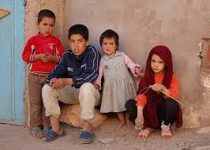
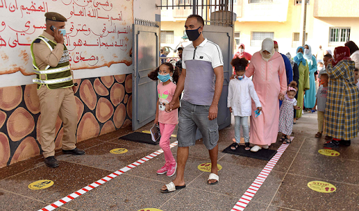

I gave birth to my baby boy at 9:00 p.m on may 28 when he arrived he was so handsome with a head full of hair. That moment he bring to me joy and also sadness as i sat and held my baby boy i adored him until he took his last breath at 12:25 p.m the next day on may 29th. I was broken but i was determined not to let the pain i was feeling take over me emotionally 3 days into losing my son i know it couldn't get the best of me so i thought about what could coup the pain and i decided to help poverty and overseas countries i pose so much love and i want to love on the people that is really in need i know that my sunshine of kindness and joyfulness will mean alot to alot of these children im willing to give to others the support and teamwork to help build a better solution i have faith that i can change a lot of their lives and the way that they think i come from a passionate place were i care alot and mean just what i say and do.
The main religion in Morocco is Islam, which is the state religion, although freedom of religious belief is also guaranteed to all. Officially, 99% of the population are Muslims, and virtually all of those are Sunni.
 Historically, Mongolian Shamanism and Buddhism have been the two dominant religions in Mongolia with most indigenous Mongols adhering to these religions. In the 13th century, Mongol Empire's rule in the region, foreign invasions by the empire exposed the Mongols to Islam and Christianity.
I picked these two countries to help build them as people who matter. They are battling with self-confidence lack of knowledge. Being misunderstood i want to be able to bring new beginnings into their lives. I want to shower them with love, care and support i want to be the ear they cry out to and they get what they deserve. I want them to know that they could have the same support as the united states. I want them to feel thought of. I want to be courageous to their needs and understandings.